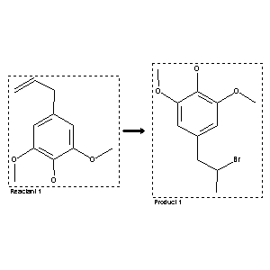

|  |
| FA | RX(1); FLST(1); RX(1) |
Reaction (1 of 1)
| Reaction ID | 5266159 |
| Reactant BRN | 1911973 |
| Reactant | 4-Allyl-2,6-dimethoxy-phenol |
| Product BRN | 8409727 |
| Product | 4-(2-bromo-propyl)-2,6-dimethoxy-phenol |
| No. of Reaction Details | 1 |
Reaction Details (1 of 1)
| Reaction Classification | Preparation |
| Yield | 84 percent (BRN=8409727) |
| Reagent | HBr; glacial AcOH |
| Time | 7 day(s) |
| Reaction Type | Bromination; addition |
| Citation Pointer | 6213239; Journal; Mingyi, Wang; Hongfang, Yang; Anxin, Wu; Xinfu, Pan; JRPSDC; J.Chem.Res.Synop.; EN; 2; 1999; 158 - 159; |
Reference (1 of 1)
| Citation Number | 6213239 |
| Document Type | Journal |
| Authors | Mingyi, Wang; Hongfang, Yang; Anxin, Wu; Xinfu, Pan |
| CODEN | JRPSDC |
| Journal Title | J.Chem.Res.Synop. |
| Language Code | EN |
| Number | 2 |
| Publication Year | 1999 |
| Page | 158 - 159 |